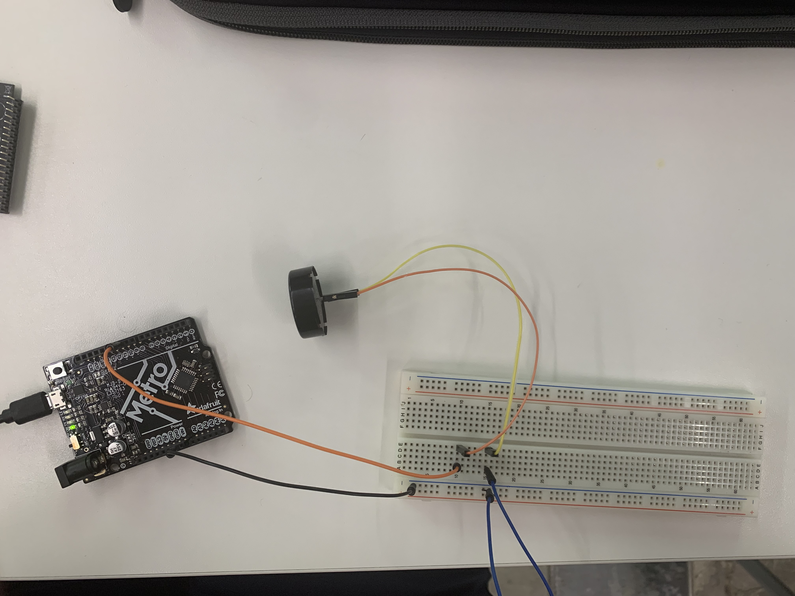
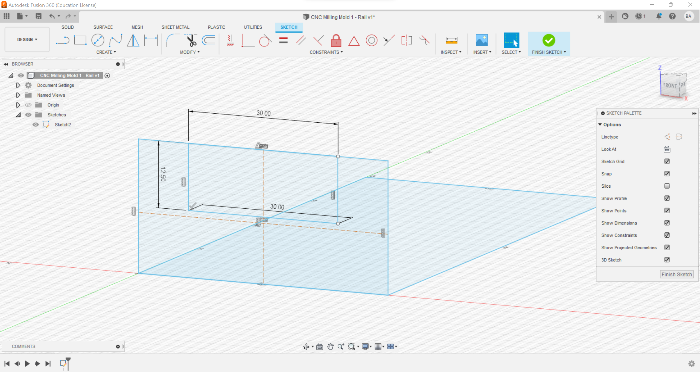
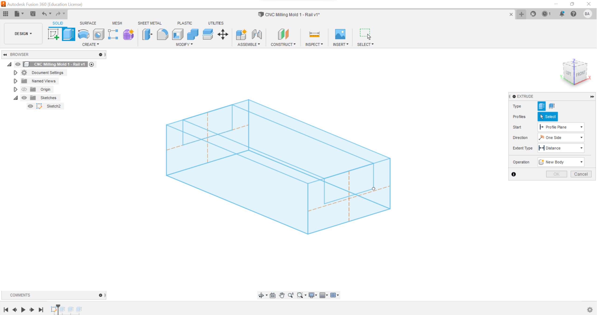
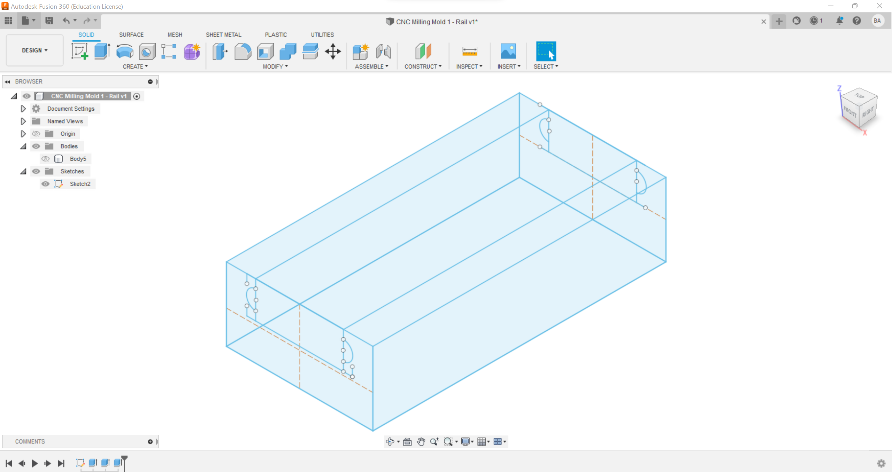
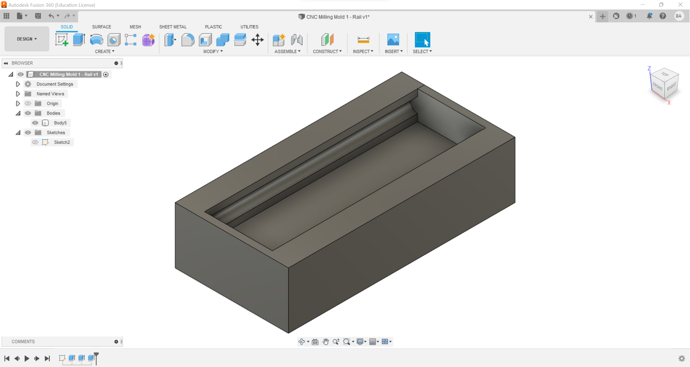
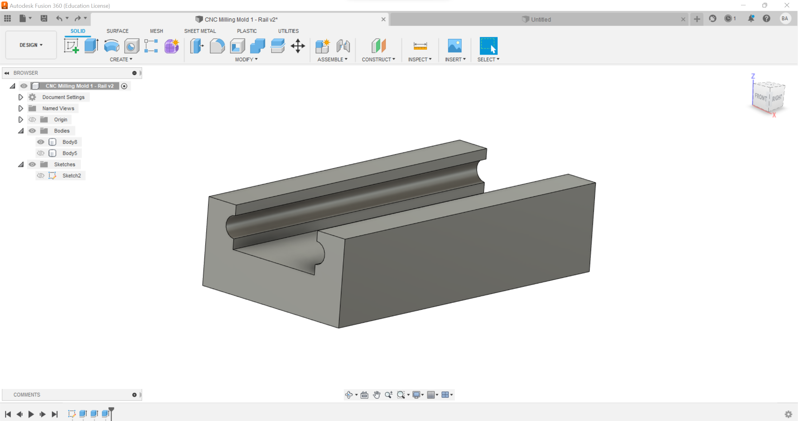

### Week 7: Electronic Output Devices
<br>
<p style="color:rgb(48, 48, 255)"><font size="+2">For assignment #7, we were tasked with using a new output device, creating a microcontroller program that uses classes rather than delays, using an oscilloscope on the output device, and also creating CAD models for our next assignment: CNC and Milling. First, I created a Piezo buzzer setup using the given tutorial on the website. Here is an image of my wiring on the breadboard, as well as a video of it playing a nice song :) :</font></p>
<style>
.center {
display: block;
margin-left: auto;
margin-right: auto;
width: 50%;
}
</style>

<br>
<style>
.center {
display: block;
margin-left: auto;
margin-right: auto;
width: 50%;
}
</style>
<center>
<video width="400" height="242" controls>
<source src="./vid1.mp4" width="400" height="242" alt="rickroll" class="center" type="video/mp4">
</center>
<br>
<p style="color:rgb(48, 48, 255)"><font size="+2">In order to make a microcontroller program, I decided to make a button class that would have to be pressed in order to activate Rick Astley's "Never Gonna Give You Up", which I found at https://github.com/robsoncouto/arduino-songs/blob/master/nevergonnagiveyouup/nevergonnagiveyouup.ino and integrated into my button class code. Unfortunately, the button's function of turning on the song is inverted, as it actually turns it off rather than on. I troubleshooted this issue for about an hour and a half to no avail, so I decided to repurpose my machine into one that "Rick Rolls" you unless you manually held the button there. If I had to guess where the error would be (I am a total novice in C and C++), I would say that it breaks around my void setup and does not apply the button's inputs to the song. All in all, its design is supposed to be annoying yet hilarious. Here is my code, as well as a video of the button de-activating the song:</font></p>
<pre><code>
define NOTE_DS3 156 // Important note: Put a hashtag infront of every "define" in order to make the code work. This was changed so that it would work with HTML.
define NOTE_E3 165
define NOTE_F3 175
define NOTE_FS3 185
define NOTE_G3 196
define NOTE_GS3 208
define NOTE_A3 220
define NOTE_AS3 233
define NOTE_B3 247
define NOTE_C4 262
define NOTE_CS4 277
define NOTE_D4 294
define NOTE_DS4 311
define NOTE_E4 330
define NOTE_F4 349
define NOTE_FS4 370
define NOTE_G4 392
define NOTE_GS4 415
define NOTE_A4 440
define NOTE_AS4 466
define NOTE_B4 494
define NOTE_C5 523
define NOTE_CS5 554
define NOTE_D5 587
define NOTE_DS5 622
define NOTE_E5 659
define NOTE_F5 698
define NOTE_FS5 740
define NOTE_G5 784
define NOTE_GS5 831
define NOTE_A5 880
define NOTE_AS5 932
define NOTE_B5 988
define NOTE_C6 1047
define NOTE_CS6 1109
define NOTE_D6 1175
define NOTE_DS6 1245
define NOTE_E6 1319
define NOTE_F6 1397
define NOTE_FS6 1480
define NOTE_G6 1568
define NOTE_GS6 1661
define NOTE_A6 1760
define NOTE_AS6 1865
define NOTE_B6 1976
define NOTE_C7 2093
define NOTE_CS7 2217
define NOTE_D7 2349
define NOTE_DS7 2489
define NOTE_E7 2637
define NOTE_F7 2794
define NOTE_FS7 2960
define NOTE_G7 3136
define NOTE_GS7 3322
define NOTE_A7 3520
define NOTE_AS7 3729
define NOTE_B7 3951
define NOTE_C8 4186
define NOTE_CS8 4435
define NOTE_D8 4699
define NOTE_DS8 4978
define REST 0
int tempo = 114;
int buzzer = 11;
int melody[] = {
NOTE_D5,-4, NOTE_E5,-4, NOTE_A4,4, //1
NOTE_E5,-4, NOTE_FS5,-4, NOTE_A5,16, NOTE_G5,16, NOTE_FS5,8,
NOTE_D5,-4, NOTE_E5,-4, NOTE_A4,2,
NOTE_A4,16, NOTE_A4,16, NOTE_B4,16, NOTE_D5,8, NOTE_D5,16,
NOTE_D5,-4, NOTE_E5,-4, NOTE_A4,4, //repeat from 1
NOTE_E5,-4, NOTE_FS5,-4, NOTE_A5,16, NOTE_G5,16, NOTE_FS5,8,
NOTE_D5,-4, NOTE_E5,-4, NOTE_A4,2,
NOTE_A4,16, NOTE_A4,16, NOTE_B4,16, NOTE_D5,8, NOTE_D5,16,
REST,4, NOTE_B4,8, NOTE_CS5,8, NOTE_D5,8, NOTE_D5,8, NOTE_E5,8, NOTE_CS5,-8,
NOTE_B4,16, NOTE_A4,2, REST,4,
REST,8, NOTE_B4,8, NOTE_B4,8, NOTE_CS5,8, NOTE_D5,8, NOTE_B4,4, NOTE_A4,8, //7
NOTE_A5,8, REST,8, NOTE_A5,8, NOTE_E5,-4, REST,4,
NOTE_B4,8, NOTE_B4,8, NOTE_CS5,8, NOTE_D5,8, NOTE_B4,8, NOTE_D5,8, NOTE_E5,8, REST,8,
REST,8, NOTE_CS5,8, NOTE_B4,8, NOTE_A4,-4, REST,4,
REST,8, NOTE_B4,8, NOTE_B4,8, NOTE_CS5,8, NOTE_D5,8, NOTE_B4,8, NOTE_A4,4,
NOTE_E5,8, NOTE_E5,8, NOTE_E5,8, NOTE_FS5,8, NOTE_E5,4, REST,4,
NOTE_D5,2, NOTE_E5,8, NOTE_FS5,8, NOTE_D5,8, //13
NOTE_E5,8, NOTE_E5,8, NOTE_E5,8, NOTE_FS5,8, NOTE_E5,4, NOTE_A4,4,
REST,2, NOTE_B4,8, NOTE_CS5,8, NOTE_D5,8, NOTE_B4,8,
REST,8, NOTE_E5,8, NOTE_FS5,8, NOTE_E5,-4, NOTE_A4,16, NOTE_B4,16, NOTE_D5,16, NOTE_B4,16,
NOTE_FS5,-8, NOTE_FS5,-8, NOTE_E5,-4, NOTE_A4,16, NOTE_B4,16, NOTE_D5,16, NOTE_B4,16,
NOTE_E5,-8, NOTE_E5,-8, NOTE_D5,-8, NOTE_CS5,16, NOTE_B4,-8, NOTE_A4,16, NOTE_B4,16, NOTE_D5,16, NOTE_B4,16, //18
NOTE_D5,4, NOTE_E5,8, NOTE_CS5,-8, NOTE_B4,16, NOTE_A4,8, NOTE_A4,8, NOTE_A4,8,
NOTE_E5,4, NOTE_D5,2, NOTE_A4,16, NOTE_B4,16, NOTE_D5,16, NOTE_B4,16,
NOTE_FS5,-8, NOTE_FS5,-8, NOTE_E5,-4, NOTE_A4,16, NOTE_B4,16, NOTE_D5,16, NOTE_B4,16,
NOTE_A5,4, NOTE_CS5,8, NOTE_D5,-8, NOTE_CS5,16, NOTE_B4,8, NOTE_A4,16, NOTE_B4,16, NOTE_D5,16, NOTE_B4,16,
NOTE_D5,4, NOTE_E5,8, NOTE_CS5,-8, NOTE_B4,16, NOTE_A4,4, NOTE_A4,8, //23
NOTE_E5,4, NOTE_D5,2, REST,4,
REST,8, NOTE_B4,8, NOTE_D5,8, NOTE_B4,8, NOTE_D5,8, NOTE_E5,4, REST,8,
REST,8, NOTE_CS5,8, NOTE_B4,8, NOTE_A4,-4, REST,4,
REST,8, NOTE_B4,8, NOTE_B4,8, NOTE_CS5,8, NOTE_D5,8, NOTE_B4,8, NOTE_A4,4,
REST,8, NOTE_A5,8, NOTE_A5,8, NOTE_E5,8, NOTE_FS5,8, NOTE_E5,8, NOTE_D5,8,
REST,8, NOTE_A4,8, NOTE_B4,8, NOTE_CS5,8, NOTE_D5,8, NOTE_B4,8, //29
REST,8, NOTE_CS5,8, NOTE_B4,8, NOTE_A4,-4, REST,4,
NOTE_B4,8, NOTE_B4,8, NOTE_CS5,8, NOTE_D5,8, NOTE_B4,8, NOTE_A4,4, REST,8,
REST,8, NOTE_E5,8, NOTE_E5,8, NOTE_FS5,4, NOTE_E5,-4,
NOTE_D5,2, NOTE_D5,8, NOTE_E5,8, NOTE_FS5,8, NOTE_E5,4,
NOTE_E5,8, NOTE_E5,8, NOTE_FS5,8, NOTE_E5,8, NOTE_A4,8, NOTE_A4,4,
REST,-4, NOTE_A4,8, NOTE_B4,8, NOTE_CS5,8, NOTE_D5,8, NOTE_B4,8, //35
REST,8, NOTE_E5,8, NOTE_FS5,8, NOTE_E5,-4, NOTE_A4,16, NOTE_B4,16, NOTE_D5,16, NOTE_B4,16,
NOTE_FS5,-8, NOTE_FS5,-8, NOTE_E5,-4, NOTE_A4,16, NOTE_B4,16, NOTE_D5,16, NOTE_B4,16,
NOTE_E5,-8, NOTE_E5,-8, NOTE_D5,-8, NOTE_CS5,16, NOTE_B4,8, NOTE_A4,16, NOTE_B4,16, NOTE_D5,16, NOTE_B4,16,
NOTE_D5,4, NOTE_E5,8, NOTE_CS5,-8, NOTE_B4,16, NOTE_A4,4, NOTE_A4,8,
};
int notes = sizeof(melody) / sizeof(melody[0]) / 2;
int wholenote = (60000 * 4) / tempo;
int divider = 0, noteDuration = 0;
class Button
{
// Class member variables.
int buttonPin;
int buttonState;
int buttonMode;
// Constructor
public:
Button(int pin, int state)
{
buttonPin = pin;
buttonMode = (buttonPin, INPUT_PULLUP);
buttonState = LOW;
}
void UpdateState()
{
int p = analogRead(buttonPin);
buttonState = p;
}
int GetState(){
int p = buttonState;
return p;
}
};
Button button1(11, HIGH);
void setup()
{
}
void loop()
{
button1.UpdateState();
if(button1.GetState() == LOW);
{
for (int thisNote = 0; thisNote < notes * 2; thisNote = thisNote + 2) {
divider = melody[thisNote + 1];
if (divider > 0) {
noteDuration = (wholenote) / divider;
}
else if (divider < 0) {
noteDuration = (wholenote) / abs(divider);
noteDuration *= 1.5;
}
tone(buzzer, melody[thisNote], noteDuration * 0.9);
delay(noteDuration);
noTone(buzzer);
}
}
}
</pre></code>
<style>
.center {
display: block;
margin-left: auto;
margin-right: auto;
width: 50%;
}
</style>
<center>
<video width="400" height="242" controls>
<source src="./vid2.mp4" width="400" height="242" alt="buttonrickroll" class="center" type="video/mp4">
</center>
<br>
<p style="color:rgb(48, 48, 255)"><font size="+2">Afterwards, I hooked up this "Rick-Rolling" contraption to the oscilloscope in order to find out what time domain my output device was operating at. After analyzing my data from the oscilloscope, I found that one wavelength was around a millisecond long, meaning that the frequency was around 1,000 Hz as the oscilloscope showed in the bottom right. I am not 100% sure if it is on a "fixed clock" as I was not sure what to look for, but the wavelengths do change, which may mean that the clock is not fixed. Here is a video of the oscilloscope:</font></p>
<style>
.center {
display: block;
margin-left: auto;
margin-right: auto;
width: 50%;
}
</style>
<center>
<video width="400" height="242" controls>
<source src="./vid3.mp4" width="400" height="242" alt="oscilloscoperickroll" class="center" type="video/mp4">
</center>
<br>
<p style="color:rgb(48, 48, 255)"><font size="+2">The final step of this assignment was to create the CAD models for the CNC/mold process. I wanted to make files that I could use for my final project, so I chose two designs: The inner section of the rail (attached to the leg) and the rail itself. Luckily, both designs had the same sketch, and the only notable difference came in how it was extruded and the size of the model when it is put through the CNC machine. Here is my process, starting with my first basic sketch that then moves onto a more advanced one with arcs that were drawn in order to create the "rail" part of my rails:</font></p>
<style>
.center {
display: block;
margin-left: auto;
margin-right: auto;
width: 50%;
}
</style>

<br>
<style>
.center {
display: block;
margin-left: auto;
margin-right: auto;
width: 50%;
}
</style>

<br>
<style>
.center {
display: block;
margin-left: auto;
margin-right: auto;
width: 50%;
}
</style>

<br>
<p style="color:rgb(48, 48, 255)"><font size="+2">After making the sketches, I extruded the two designs for one: the mold that makes the inner/moving part of the rail, and two: the rail itself (not a mold, just a CAD design for my rail that I thought was SUPER helpful for my final project). Here they are:</font></p>
<br>
<style>
.center {
display: block;
margin-left: auto;
margin-right: auto;
width: 50%;
}
</style>

<br>
<style>
.center {
display: block;
margin-left: auto;
margin-right: auto;
width: 50%;
}
</style>

<br>
<a href="./stl1.stl">STL Mold File</a>
<br>
<a href="./stl2.stl">STL Rail File (rail without walls).</a>
<br>
<p style="color:black">Return to Main Page <b>[here](../index.html)<b></p>
<br>